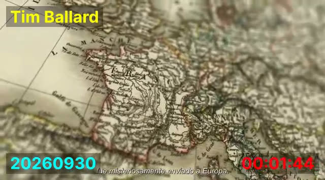
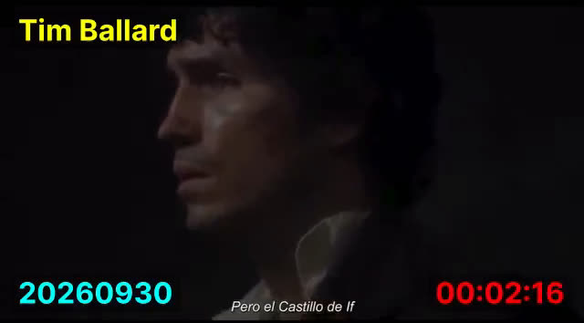
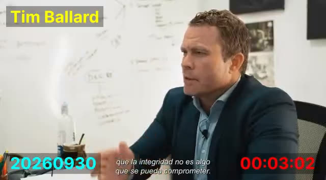
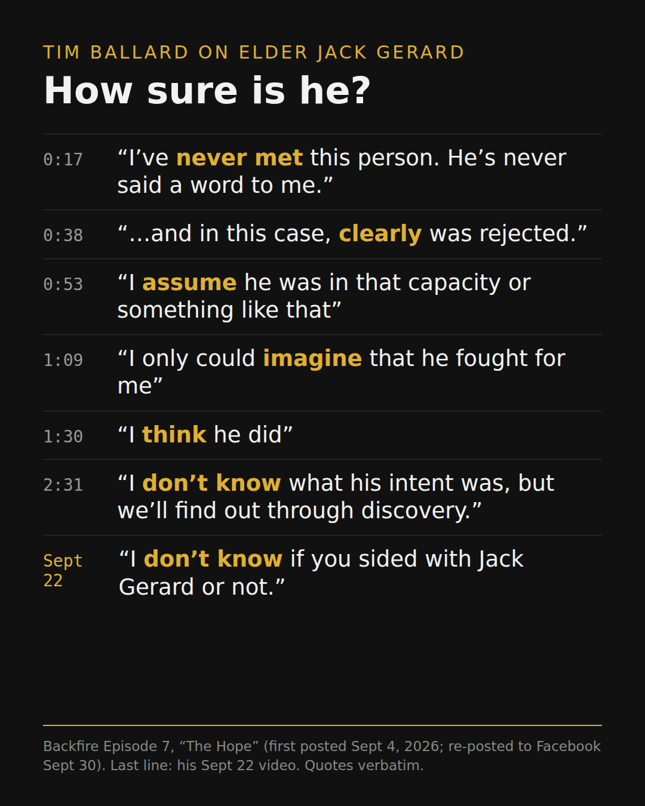

The Good-Guy Re-Re-Edit
Ballard's September 22 video called Elder Jack N. Gerard the "GOOD GUY." Gerard already had a full segment in Backfire Episode 7, "The Hope," which Ballard has now posted three times. Given seven minutes instead of seventy seconds, here is what he says.
One segment, three postings
| Posted | Where | What |
|---|---|---|
| Sept 4 | YouTube, Backfire: The Excommunication Story of Tim Ballard (3:52:13) | Gerard segment at 3:21:36–3:28:49 |
| Sept 20 | YouTube, "BACKFIRE EPISODE 7: The Hope (Spanish Subs)" (7:14) | The same segment, cut out on its own |
| Sept 30 | Facebook (7:14) | The same cut again. Caption: "Notwithstanding this craziness re: the church people vs. the Ballard Family……There is, and ALWAYS has been, HOPE." |



How sure is he?
He opens by saying he has no first-hand knowledge. Then the claims run from certain to unsure, in that order.
- 0:17"I've never met this person. He's never said a word to me."No contact
- 0:38"…his voice would have been listened to. And in this case, clearly was rejected."Stated as fact
- 0:53"I assume he was in that capacity or something like that"Assumption
- 1:09"I only could imagine that he fought for me"Imagined
- 1:30"he would have stood up for me I think he did"Belief
- 2:31"I don't know what his intent was, but we'll find out through discovery."Doesn't know
- Sept 22"I don't know if you sided with Jack Gerard or not."Doesn't know
The firmest claim, that Gerard's voice "clearly was rejected," comes first. The basis for it, "I only could imagine," comes after. His job title also shifts within fifteen seconds, from "executive director of the church communication department" (0:38) to "put in as the PR director … or something like that" (0:53).

Europe, both ways
"He got mysteriously swept away to Europe … Like Kevin Pearson for bad or Jack Gerard for good. I guess that's where you go."Episode 7, 1:35–2:16
In the full Backfire video, Kevin Pearson, the man Ballard blames, is "moved to Europe" (1:10:05). Gerard, the man he praises, is "swept away to Europe." So a European assignment gets read as punishment for the bad Kevin and as exile for the good watchman. Between the two, Ballard cuts to the prison scene from The Count of Monte Cristo: "I know perfectly well that you are innocent. Why else would you be here?"
The talk, re-ordered
From 3:02 to 4:11 Episode 7 plays Elder Gerard's April 2024 general conference talk, "Integrity: A Christlike Attribute." Set beside the published text, the sentences come in a different order.
- 1"…what their decisions or decision-making process would look like if published online or on the front page of a major newspaper."
- 2"As the Church comes out of obscurity and darkness, we, like Daniel, must rise above…"
- 3"As a covenant people … we must be beyond reproach…"
- 4"Acting with integrity builds faith and trust…"
- 5"In our councils, we resist outside influences and follow the Lord's revealed process…"
- 6"Our focus is on the Savior, and we are careful to avoid actions that may be perceived as serving our own interests…"
- 7"We go out of our way to avoid any perception that our actions may be influenced by the honors of men…"
- 3covenant people, beyond reproach
- 4acting with integrity
- 2obscurity and darkness ("like Daniel" dropped)
- 6focus on the Savior ("benefiting our family" dropped)
- 7honors of men ("personal recognition, generate more likes…" dropped)
- 1front page of a major newspaper
- BBallard: "I think he's talking about what happened just months earlier."
- The "front page" line moves from first to last. In the talk it opens the passage. In Ballard's cut it is the punchline, followed straight away by his own "I think he's talking about what happened just months earlier."
- Sentence 5 is left out. It says Church councils "follow the Lord's revealed process." That runs against Ballard's story of a council that ignored it.
- "Will you be embarrassed?" isn't in the talk. After the clip, Ballard says in his own voice: "He says, the decisions you make and the process you use to make a decision assume that someday that will be headline. And will you be embarrassed?" The nearest thing in the talk is a question Elder Uchtdorf once asked Gerard about his own life: "Has there been anything in your life that, if brought to the attention of the public, would be an embarrassment to you or the Church?"
Then he corrects the man he has just called a watchman: "I would say he's prophetic, except he got one thing wrong. It's not just going to be headlines. It's going to be Sound of Freedom 2. It's going to be a docuseries … an international bestselling book."
The Kevin story
Episode 7 mentions Kevin Pearson only in passing ("for bad"). The story behind it is at 2:41:54–2:44:01 of the September 4 video. Here it is in his order, with his own qualifiers.
- Who gives the order changes. First Pearson "sent" Hamilton, then Pearson "purportedly ordered" him, then Hamilton "orders the hit job."
- Every link is hedged except the quote. "I believe … purportedly … I believe … probably." Then "go do this to Tim Ballard" is told as words actually spoken, at a setting-apart Ballard doesn't say he witnessed.
- "[Kevin / Catherine] said he was really nice." He slurs the name. Our stored transcripts hear "Kevin." A second machine pass hears "Catherine," his wife, which is presumably what he means. If it's Catherine, she found the man "really nice" at the time, and it becomes "kind of creepy" only "once you know the background," a background Ballard himself says he "believe[s]" and calls "purported." If it's Kevin, a Kevin is vouching for the Kevin he just accused.
- "State president." He says "state president" and "State Conference" for stake president and stake conference. Quoted as spoken.
Elder Kevin S. Hamilton is a General Authority Seventy who spoke at the April 2022 general conference. Every claim about him on this page is Ballard's. Ballard also quotes "Elder Hamilton" on substituting "the Savior" for "the Church" (2:44:11). That line isn't in the 2022 talk, and we haven't found its source.
What this page does not claim
It doesn't say what was decided in any Church meeting, who attended, why anyone was given an assignment in Europe, or what anyone said to Ballard's wife. It reports what Ballard's videos say, set against the published talk.
Sources and method
- Facebook video 975302382278936, Tim Ballard page, Sept 30, 2026, 7:14 (TB Backfire Log V054). Stills are from this file.
- YouTube AYhFyEz092o, Sept 20 (V017), and pBo_2DYxfrY, Sept 4 (3:21:36–3:28:49 and 2:41:54–2:44:01). Quotes come from our corrected transcript of the Sept 4 video. Two unclear spots were re-checked with a second transcription pass.
- Jack N. Gerard, "Integrity: A Christlike Attribute," April 2024 general conference. Compared sentence by sentence, retrieved Oct 1, 2026.
- Kevin S. Hamilton, "Then Will I Make Weak Things Become Strong," April 2022 general conference.